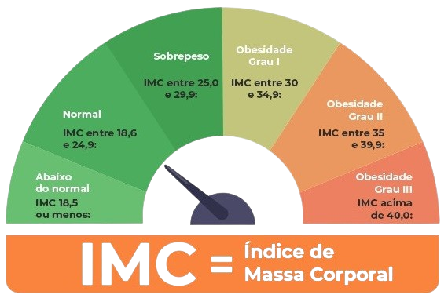

Como interpretar o resultado de IMC
Depois de obter o resultado de IMC, deve-se interpretar o valor utilizando a seguinte tabela:
Para que serve o cálculo do Índice de Massa Corporal?
O IMC é um dos parâmetros utilizados para classificar a composição corporal de uma pessoa.
Isso porque ele avalia se o peso está adequado para a estatura. Por isso, não é incomum que
ele seja aferido durante exames de check-up, por exemplo.
Estudos científicos demonstram que os indivíduos que se afastam da faixa adequada ou
recomendada do IMC, seja para mais ou para menos, apresentam maior risco de complicações
para a saúde e também de mortalidade.
Embora seja uma ferramenta importante e reconhecida mundialmente, o IMC não informa sobre a
circunferência abdominal, a distribuição da gordura corporal e a massa muscular.
Atualmente, essas medidas também são reconhecidas como informações relevantes e importantes
para a análise de composição corporal por demonstrarem relação com o risco de problemas
cardiovasculares e para a saúde em geral.
Como calcular o IMC?
O IMC é calculado por meio da divisão do peso do indivíduo pela estatura, em metros, ao quadrado. De
forma simplificada, temos: peso/(altura x altura).
Vamos a um exemplo prático: se uma mulher pesa 60 kg e tem 1.75 de altura, seu IMC será 19.59kg/m2.
Portanto, como você pode conferir a seguir, ela apresenta peso adequado para a sua altura.